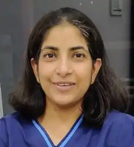

Advanced Diagnostic Tools
State-of-the-art ultrasound configured for early anomaly detection, fetal neuro-cardiac evaluation and detailed growth assessment.
Centre for Life · Punjabi Bagh, Delhi

Centre for Life brings advanced fetal imaging and clinical genetics together under one roof in Punjabi Bagh, Delhi. From the first-trimester scan to complex anomaly evaluation, every finding is interpreted using international protocols — and explained in language families can act on.
Our lead consultant, Dr. Rachna Gupta, has practised fetal medicine since 2009 and holds a Diploma in Fetal Medicine from FMF-UK — a qualification held by only a handful of doctors in India. She is also the only doctor in India to complete an international fellowship in fetal neurosonography at Lis Hospital for Women’s Health, Israel.
Approved FMF-UK examiner for anomaly scans and a FOGSI-certified trainer in obstetric ultrasound.
Clinical genetics and counselling by Dr. Hemlata Bhatia, integrated with advanced 3D/4D fetal imaging.
Every finding during pregnancy deserves thoughtful interpretation, clear explanations, and expert planning. Here is what sets Centre for Life apart.
State-of-the-art ultrasound configured for early anomaly detection, fetal neuro-cardiac evaluation and detailed growth assessment.
In-house clinical genetics by Dr. Hemlata Bhatia — carrier risks, recurrent pregnancy loss, NIPT interpretation and complex anomaly counselling.
Dr. Rachna Gupta is an FMF-UK approved examiner, a FOGSI-certified trainer, and the only doctor in India with an international Fetal Neurosonography fellowship (Israel).
From NT and anomaly scans to amniocentesis, fetal therapy and genetic counseling — 18+ specialised services with a transparent published tariff.